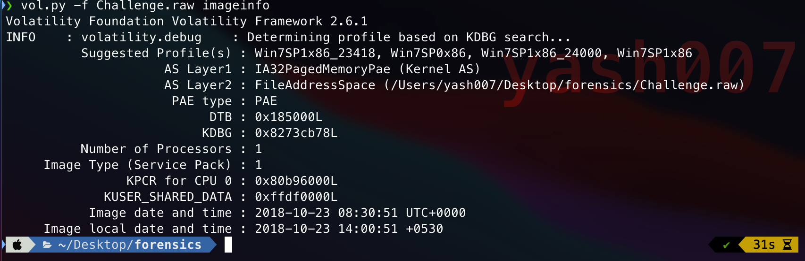
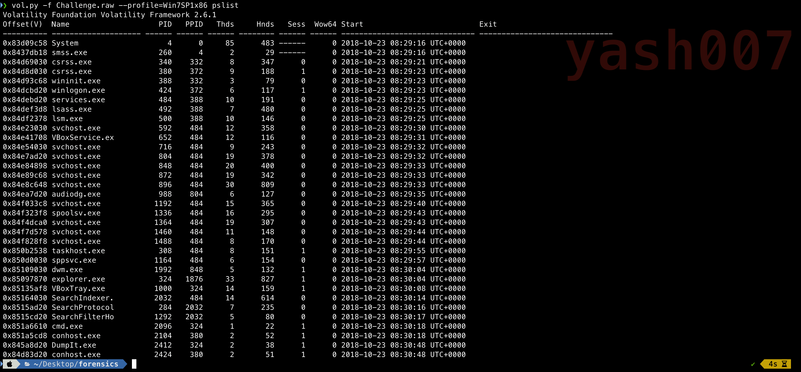
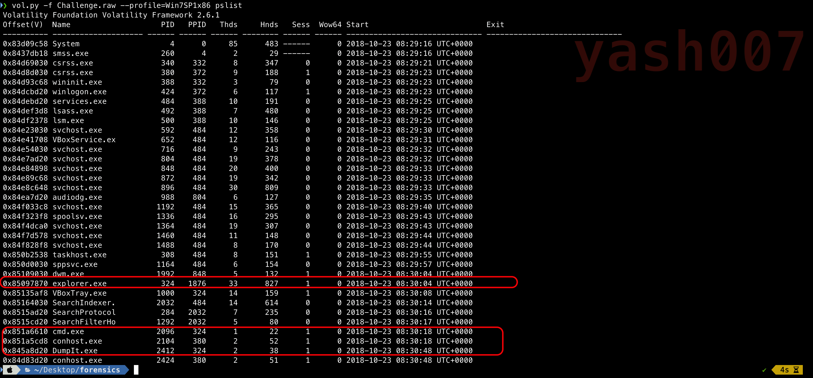
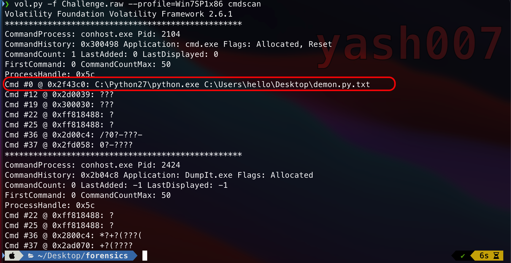
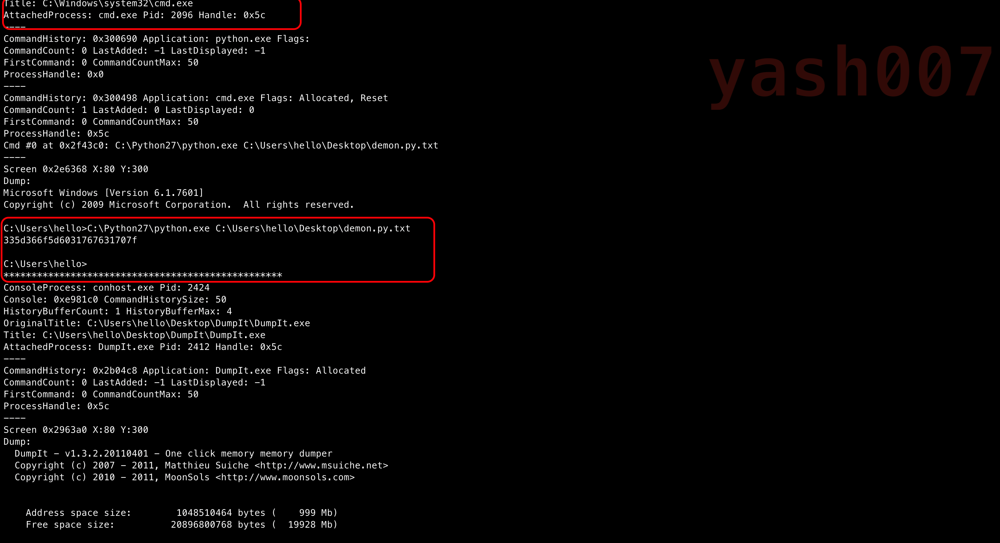
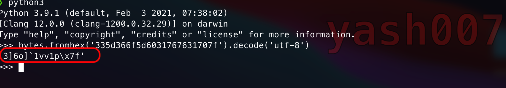
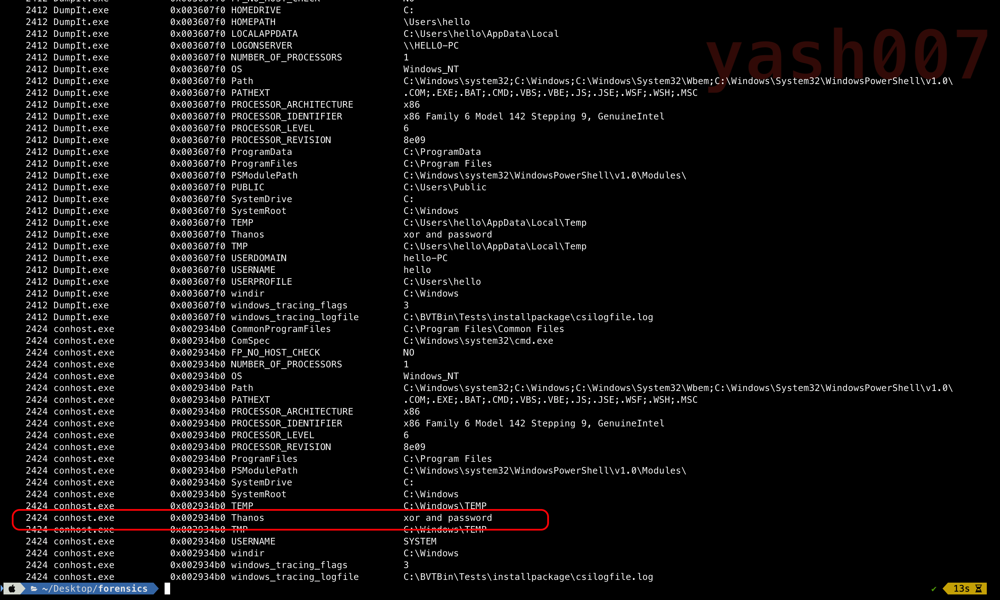
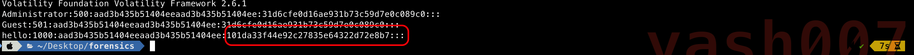

I am very curious about memory forensics, so i decided to start with Introdution of Memory Forensics using CTF Challenge Samples.
Definition
Memory forensic refers to the analysis of the volatile memory dump of Virtual Image or a Physical System Image. This analysis is carried out by security researchers to investigate and identify malicious behaviour or attacks which got missed by UserLand Softwares.
Memory Dump
A Snapshot of A Virtual Machine image or a physical memory dump which may contain about the valuable forensics data about the system behaviour and root cause of a crash.
Analysis
Our first stage will be to analyse the Memory dump file using tool Volatility Framework.
We will thing we will use the PROFILE to determine the Image specifics.
The Profile Tells about the OS of the image from which machine the dump data was extracted.

Volatility framework provides the details about of image, which profile to be used.
As a Security Researcher, Following specifications are analysed before going any further :
- Currently Running Processes.
- Commands executed.
- Processes which have been terminated.
- Browser History.
So , to list the current running processes, we will use the following command as shown in image below.

We can see the list of processes which were running when the memory dump was carried out. Output of the command gives a fully formatted view which includes the name, PID, PPID, Threads, Handles, start time.
In the output , there are process which needs to analysed.
- cmd.exe :- This process executes Command Prompt.We can analyse this process to which commands have been executed.
- DumpIt.exe :- This is tool which was used to dump the memory.
- explorer.exe :- This process handles File Explorer.

As we can CMD.exe process was running, lets analyse what commands have been executed.

As we can see the executed command : C:\Python27\python.exe C:\Users\hello\Desktop\demon.py.txt
Let's see what output we recieved from stdout

As highlighted above, stdout throws some string "335d366f5d6031767631707f" which is in hex encoded format , on decoding the string we found something as shown .

Now, we will try to analyse the system environment variable path set.

Till now we have found some interesting stuff related to the Flag.
- String with Hex-Encoded.
- XOR.
- Password.
Now we will try to extract the NTLM Hash of the system as shown

Using the online NTLM hash crack tool we can retrive the Flag.
// Flag : flag{you_are_good_but1_4m_b3tt3r}